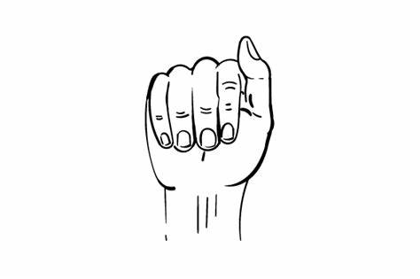
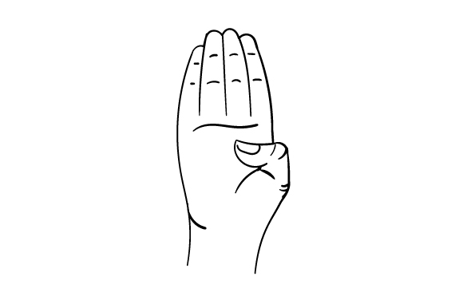
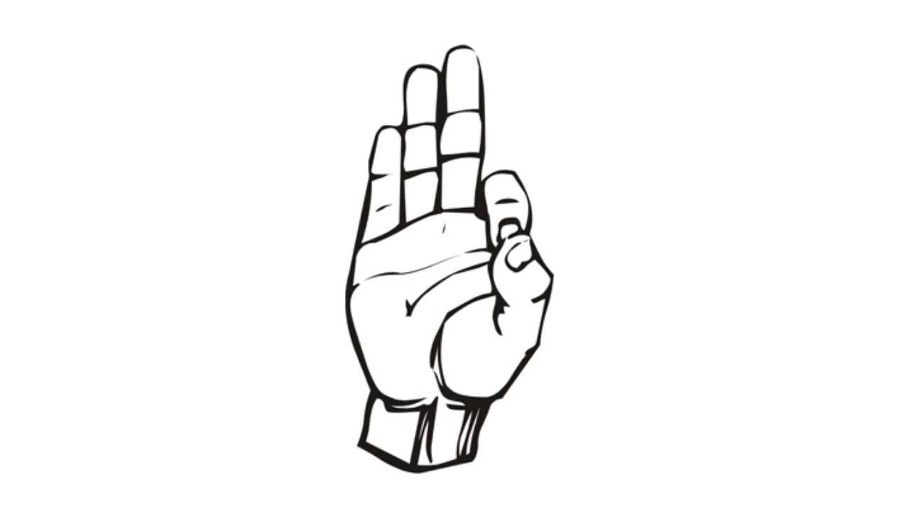
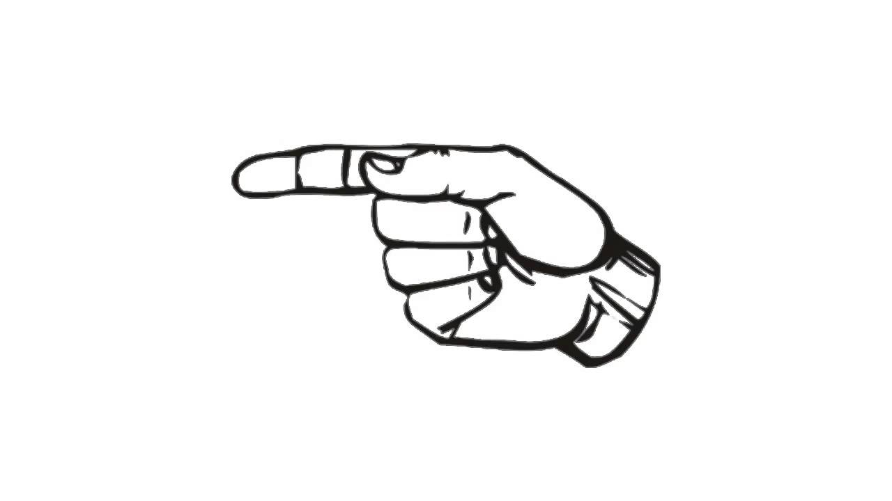
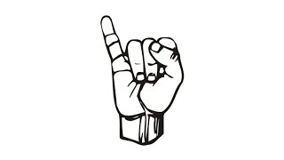
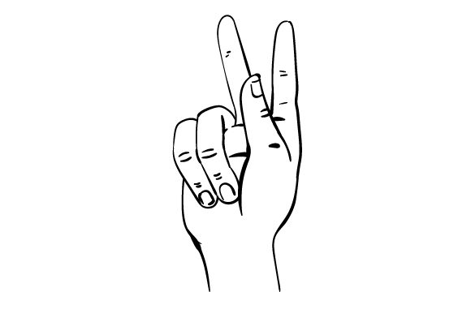
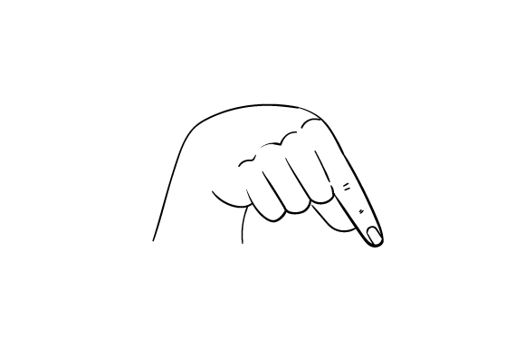
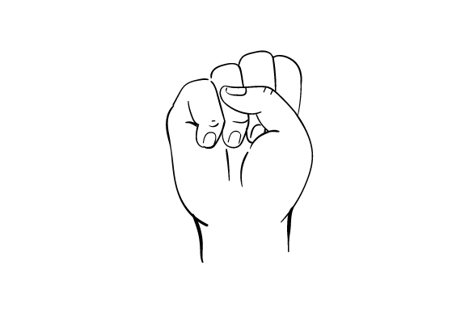
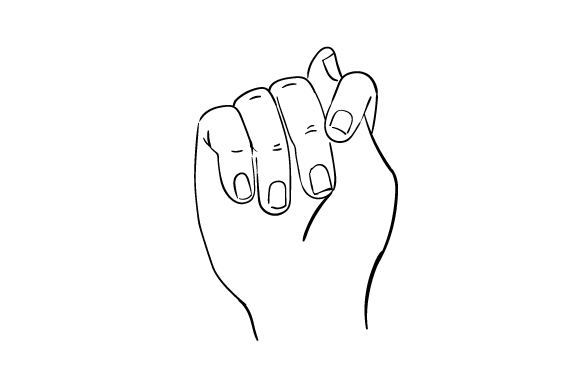
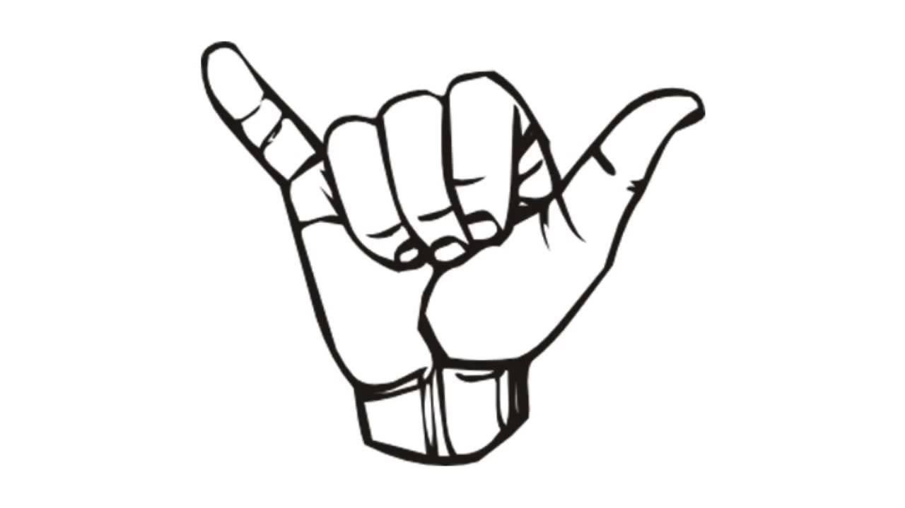

🔤 Learn the ASL Alphabet
Understand the American Sign Language alphabet with examples, videos, and visual cues. Perfect for beginners!
📘 What is the ASL Alphabet?
The American Sign Language (ASL) alphabet consists of 26 hand gestures that correspond to each letter of the English alphabet. These handshapes are used for spelling out names, places, or words that don’t have a specific sign.
🧠Tips for Learning Sign Language
- ⳠStart slow: Learn a few signs at a time, don’t rush!
- 😄 Be expressive: Facial expressions are part of the grammar!
- 🔠Practice regularly: Use flashcards, record yourself, or sign with a mirror.
- 🤲 Use both hands: For two-handed signs, make sure both are visible.
- 🥠Watch native signers: Learn from ASL videos and real conversations.
- ❤️ Don't fear mistakes: Stay patient and consistent — you’re doing great!
📌 Full ASL Alphabet Chart
This chart provides a quick overview of all 26 ASL letters. Scroll down to explore each letter in detail with video demonstrations and descriptions.
🔠Explore Letters
🅰️ Letter A
Description: Make a fist with the thumb resting along the side of the index finger.
🅱️ Letter B
Description: Extend all four fingers upward while the thumb rests across the palm.
🅲 Letter C

Description: Form a curved hand to resemble the shape of the letter C.
🅳 Letter D
Description: Raise your index finger while the thumb and other fingers form a circle.
🅴 Letter E

Description: Bend all your fingers at the knuckles while keeping them close to the thumb.
🅵 Letter F
Description: Touch the tip of your index finger to the tip of your thumb, forming a circle.
🅶 Letter G
Description: Extend your index finger and thumb to the side, like a pinch gesture, palm facing inward.
🅷 Letter H

Description: Extend your index and middle fingers together while the thumb and other fingers are tucked into the palm.
🅸 Letter I
Description: Raise your pinky finger while keeping the rest of the fingers in a fist.
🅹 Letter J

Description: Use your pinky finger to trace the letter J in the air.
🅺 Letter K
Description: Extend your index and middle fingers upward and the thumb in between them, palm facing out.
🅻 Letter L

Description: Extend your thumb and index finger to form an L shape.
🅼 Letter M

Description: Place your thumb under your first three fingers while keeping the pinky extended.
🅽 Letter N

Description: Place your thumb between your middle and ring fingers while keeping the other fingers curled.
🅾️ Letter O

Description: Form a circle with all your fingers touching at the tips to make an 'O' shape.
🅿️ Letter P
Description: Form the K handshape and rotate your hand downward to resemble the letter P.
🇶 Letter Q
Description: Form the G handshape and point it downward to resemble the letter Q.
🇷 Letter R

Description: Cross your index and middle fingers with the palm facing forward.
🇸 Letter S
Description: Make a fist with the thumb crossing in front of the fingers.
🇹 Letter T
Description: Tuck your thumb between your index and middle fingers while making a fist.
🇺 Letter U
Description: Raise your index and middle fingers together pointing upward, with the other fingers tucked in.
🇻 Letter V

Description: Raise your index and middle fingers in a V shape, palm facing out.
🇼 Letter W

Description: Raise your index, middle, and ring fingers to form a W shape.
🇽 Letter X

Description: Bend your index finger into a hook shape, palm facing forward.
🇾 Letter Y
Description: Extend your thumb and pinky finger while keeping the other fingers curled into your palm.
🇿 Letter Z

Description: Use your index finger to trace the shape of the letter Z in the air.